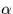
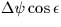

The Greenwich Mean Sidereal Time GMST is linked to UT1 by a numerical formula which is implemented in the SLALIB routines sla_GMST and sla_GMSTA. There are, of course, no leap seconds in GMST, but the second changes in length along with the UT1 second, and also varies over long periods of time because of slow changes in the Earth's orbit. This makes the timescale unsuitable for everything except predicting the apparent directions of celestial sources.
The Local Apparent Sidereal Time LAST is the apparent right ascension of the local meridian, from which the hour angle of any star can be determined knowing its . It can be obtained from the GMST by adding the east longitude (corrected for polar motion in precise work) and the equation of the equinoxes. The latter, already described, is an aspect of the nutation effect and can be predicted by calling the SLALIB routine sla_EQEQX or, neglecting certain very small terms, by calling sla_NUTC and using the expression .
SLALIB --- Positional Astronomy Library